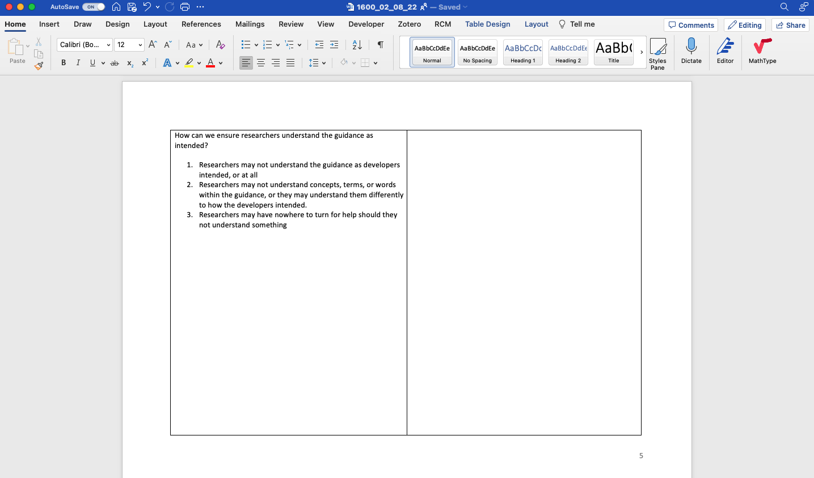

Methods
The purpose of this study was to elicit ideas from experts familiar with RG dissemination, on how to address factors that may influence the application of (and thereby adherence to) reporting guidance. My methods had two parts: 1) brainstorming ideas with EQUATOR during workshops and 2) extending this list through focus-groups with guideline developers, publishers, and guideline advocates. I then describe the combined results.
Before describing my workshop and focus group methods in detail, I will briefly outline the key differences. Whereas I actively contributed during the EQUATOR workshops, I tried to remain a passive facilitator during the focus groups - I wanted to capture the thoughts of participants whilst minimising my influence as far as possible. Whereas in the workshops, EQUATOR staff and I spent many hours, across multiple sessions, working through behavioural influences one at a time, focus group participants had limited time and so selected their own influences.
Workshopping Ideas with EQUATOR
I described the workshops I ran with EQUATOR in chapter ?var:chapters.workshops, including the techniques I used to encourage rich discussion and to navigate my position as a participating researcher, contributing ideas myself whilst facilitating others’ to share their voices. In those workshops, I asked participants to consider each intervention function in turn and suggest ideas employing it. After the workshop, I then labelled each idea with the influence(s) it would be addressing to create an “ideas document” with two columns: influences were described in the left hand column, and ideas in the right hand column. I invited workshop participants to review and edit this document, thereby co-producing lists of influences and ideas. The file can be seen in Appendix #TODO.
Focus groups with external stakeholders
Focus groups are researcher-led group discussions that use conversation as a form of data collection @givenFocusGroups2008. A key element of focus groups is interactions between participants as they agree, disagree, challenge, and ‘feed off’ of each other. I chose focus groups because I expected this interaction to lead to more ideas being generated than if I interviewed participants in isolation. Focus groups are also a practical way to collect data from larger groups of people. This is in contrast to in-depth interviews which are more useful in eliciting detail about individuals’ perspectives.
Sampling
To seek variation and ideas from broad range of stakeholders, I invited a purposive sample including the developers of popular reporting guidelines, publishing professionals, and academics that have studied reporting guidelines. I asked participants to extend the invite to others they felt would be appropriate. Because the BCW requires input from experts with insight into the intervention, I decided to elicit the opinions of authors in a separate study (see chapter ?var:chapters.pilot).
Following best-practice, I used information power @malterudSampleSizeQualitative2016 to guide my estimated sample size. Malterud et al. posit that the more relevant information a sample holds, the fewer participants are needed. They argue that sample size sufficiency depends on five factors: 1) whether the study’s aim is narrow or broad, 2) whether samples are considered dense (they have a lot of relevant experience or knowledge of the phenomena) or sparse, 3) whether the study is well supported by theory, 4) the quality of dialogue, and 5) whether data will between compared between participants/groups. My aim was narrow and well defined. My sample was dense in that participants knew a lot about how reporting guidance is disseminated but also showed variance in terms of which guidelines they work on and which parts of the academic system they represented. I used the BCW as an applied theory. I used open questioning and to encourage strong dialogue (I elaborate on this later), and I was not planning a cross-case analysis. Therefore, I deemed my information power sufficient to justify initially recruiting 15-20 participants in 4-5 groups.
I used the dialogue criteria from Information Power to decide when to stop recruiting. By monitoring the number of edits to the co-produced file I could be confident that my information power was good. Once groups began to add fewer and fewer comments, I judged that the benefit of continued recruitment was insufficient given time constraints.
Materials
I used the ideas document generated in the workshops with EQUATOR to prompt discussion in the focus groups. However, because ideas generated by previous participants could bias or limit the creativity of current participants I initially hid them by turning the text in the ideas column white before sharing. I would reveal the text only after participants had exhausted their own imagination (see Figure 1 for an example). All participants could edit this file to record their own ideas or elaborate on other people’s ideas. At the end of each focus group, I would then turn the ideas column white again, ready for the next group to continue the process. In this way, each group built upon the output of the previous groups.


Focus Groups
I conducted focus groups between May-July 2022 online using Zoom. Before each focus group, I asked participants to spend some time thinking about barriers and facilitators. I did this because I wanted participants to get into the frame of mind and come to the focus group “armed” with influences they were ready to discuss. I was also interested to see whether participants would contribute influences that I did not identify in chapters ?var:chapters.synthesis.
Each focus group lasted 2 hours. Following standard practice, I began by introducing myself and the project in a way that I hoped would help participants relax and to think open-mindedly, not defensively. I explained where the list of influences had come from, and that the influences were in reference to reporting guidelines in general, and not necessarily a comment on any guideline in particular. I encouraged participants to think beyond the guideline documents themselves, and to consider all stakeholders and resources involved. I explained the goal was to brainstorm as many ideas as possible, and not worry about whether ideas were good or bad.
It was not possible for a single focus group to cover all influences within a reasonable amount of time, so I allowed participants to select which items they wanted to discuss. I did this by giving them a few minutes to read through a list of influences, raise any additional influences they felt were missing, and mark those that they wanted to talk about. I occasionally selected influences to discuss myself, either because they had been neglected by previous groups or because I expected participants to have insight into it.
For each influence discussed, I would explain it and allow participants to ask questions. I then asked participants to spend a couple of minutes reflecting on the influence and brainstorming solutions on their own before discussing them as a group. I encouraged this solo reflection because I wanted all participants to engage with the problem. (#REF)
#ASK CA: What is a reference for this technique?
To facilitate discussion, I would ask open ended questions, often drawing on intervention functions from the BCW by asking questions like “how could this be easier to do?” or “how could we change how people feel about this?”. I did this when participants ran out of ideas, or when they got fixated on a particular type of intervention, in which case I would reassure participants that their fixated solution was already documented and that it would be useful to think of alternatives.
Once participants had discussed all of their own ideas, I would reveal the ideas identified by previous groups by changing the colour of text from white to black. Participants could then edit and extend the text until it reflected all of their thoughts too. Ideas were never removed from the document, but participants could add concerns or disagreements if they wanted to. Editing the file in this way allowed participants to document their thoughts in their own words.
After each focus groups I made notes on how the session went and reflected on what I could have done differently. I made a copy of the ideas document and then turned the text in the ideas column white again, ready for the next group. Taking copies after each group created a paper trail of how the document had evolved after each session, and counted the number of additions so that I could monitor how many new ideas had been added and, therefore, whether I could stop data collection.
Data processing and analysis
I used qualitative description for my analysis (@bradshawEmployingQualitativeDescription2017; @kimCharacteristicsQualitativeDescriptive2017), which involved aggregating and summarising ideas. I imported the final ideas document into NVivo and applied descriptive codes to ideas. If a sentence contained multiple ideas, I would code each idea separately. I also coded the barriers and stakeholders that were related to each idea. I did not interpret data as doing so would erase the views captured during co-production.
I grouped ideas inductively in ways that felt cohesive and made the results easy for my intended audience (the reporting guideline community) to understand and act upon. For example, I aggregated “ask authors to cite reporting guidelines” and “display citation metrics on reporting guideline resources” into a group about “Citations”, even though they target different barriers (discoverability and perceived trustworthiness) and employ different intervention functions (education and persuasion).
I discussed and refined my coding, aggregating and summarising with one of my supervisors, Jennifer de Beyer. I sent the aggregated, summarised ideas to focus group participants and EQUATOR members, inviting them to check it reflected their ideas faithfully. I also invited feedback from guideline developers who had shown an interest in the study but had been unable to attend a focus group.
Reflexivity & Trust
In chapter ?var:chapters.workshops I described my active role within my workshops with EQUATOR and I argued that my subjectivity was an asset within the workshops. In contrast, I tried to remain objective when running focus groups with external stakeholders, in order to capture the perspectives of participants without influencing them. My research paradigm for the focus groups was post-positivist, in that I considered that ideas were “out there”, but that differences in context, experience, and opinion would affect what I (and participants) observed, understood, and concluded.
I wanted to ensure my results could be trusted as an account of participants’ views. Lincoln and Guba @lincolnNaturalisticInquiry1985 argue that for a study to be trustworthy, the researcher must show that the findings are credible (‘true’), transferable (applicable to other contexts), dependable (consistent and repeatable), and confirmable (shaped by participants, not by the researcher’s bias or motivation). Lincoln and Guba propose a number of techniques to achieve these criteria, and I describe the techniques I used in Table 1.
#ASK CA: I haven’t named an approach. I’ve tried to be clear with what I did, but I’ve struggled to find the correct label for it. We talked previously about Active Research but I don’t think this is correct for this chapter.
| Technique | Implementation |
|---|---|
| Techniques for establishing credibility | |
| Member-checking | Lincoln and Guba argue that member checking is the most important way to the establish validity of an account @lincolnNaturalisticInquiry1985. Accordingly, I invited participants to comment on my synthesised results, asking for feedback on the structure of categories, my interpretation of their data, and my findings and conclusions. I also invited participants to comment on the product of my data analysis in the form of itemized information and condensed notes. |
| Peer debriefing | Throughout the design, data collection, analysis and reporting, Charlotte Albury acted as a disinterested peer. By questioning my reasoning and exploring my assumptions, she helped me become aware of biases, perspectives I was taking for granted, and assumptions I was making. Jennifer de Beyer acted as a disinterested peer during data analysis. |
| Techniques for establishing transferability | |
| Thick description | I aspired to report my results with context by indicating when ideas were common or rare, and who they originated from when I felt this was particularly relevant. I reported disagreements, provide quotes, and relationships between ideas. |
| Techniques for establishing confirmability | |
| Audit trail | I referred to audio recordings of the focus groups whenever I needed to clarify parts of the document. I kept versions of raw data collected from all stages. I made a note of my own ideas before commencing data collection, documented all stages of the workshops I held internally with the EQUATOR Network, and kept copies of the co-produced file after every focus group. I kept a copy of my coding in NVivo, and versions of the unitized information and summaries that I sent to participants before and after member checking. This audit trail meant that I could be certain of which stages of research ideas originated from. |
| Reflexivity | I wrote down my own ideas before commencing the study (see chapter ?var:chapters.workshops), along with my beliefs and experiences of reporting guidelines. I continued to keep personal notes throughout planning, data collection, analysis and reporting, in an attempt to remain aware of my own perspectives and positions, and how they may influence my research. |
Ethics & Data Management
The study was approved by the Medical Sciences Interdivisional Research Ethics Committee (R80414/RE001). Participants gave informed consent by completing an online form. Participant’s edits to the co-produced file were anonymous. I recorded the audio of focus groups so that I could refer to them during analysis, if necessary. All data and recordings were kept on secure university storage.